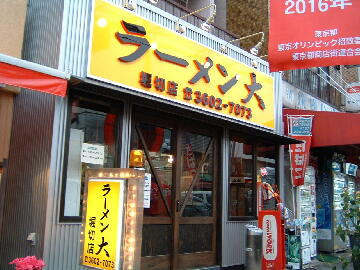
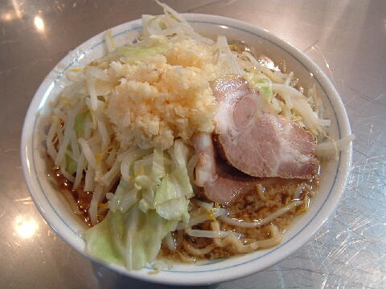
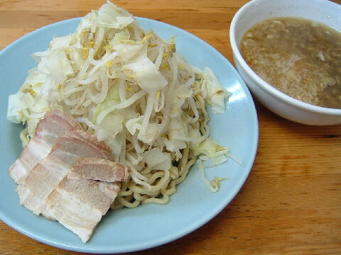

葛飾区 堀切 4-57-14
無
11：30〜24：40

店員は、テキヤ風の男性が独り。
近くのイタメシ屋の店員が交代でやっている。
白コショウ、黒コショウ（共に自分で挽くタイプ）。トウガラシ。
レンゲ有、ティッシュ有、名刺は無。
BGMは、FMラジオ。
トッピングは、フツウ。
「大」は他にも二郎を名乗った事のない支店が各地にある。
旧 ラーメン二郎 堀切店
らーめん大｜ニンニク入れますか？ らーめん大の公式HP
「ラーメン大 堀切店」でヤフー検索
「ラーメン大 堀切店」でヤフーリアルタイム検索
「ラーメン大 堀切店」でグーグル検索

ラーメン ヤサイニンニク
麺は、四角い中太チジレ麺。カタメにしなくともホギホギしている。量は少なめ。
ぶたは、チャーシュー。
スープは、甘辛い。表面に油の層がある。
ヤサイは、モヤシ7：キャベツ3の割合。やや柔らかく茹でられている。
ニンニクは、山盛りの生ニンニク。

あつもりつけラーメン ヤサイニンニク
トッピングはラーメンと同じ。
タレの皿には、メンマとすりつぶされた豚がスプーン一杯分入り、
トウガラシとキザミネギが少々かかる。ニンニクはこちら。
麺の皿には、ヤサイとぶた。
ＰＣ店